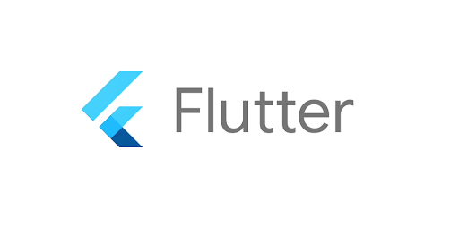

Flutter has been gaining immense popularity in recent times, and for a good reason. It is a powerful open-source mobile app development framework created by Google. It enables developers to build beautiful, fast, and high-performing native apps for Android, iOS, and web platforms with a single codebase.
If you're an aspiring app developer preparing for a job interview, it's important to have a clear understanding of the most commonly asked Flutter interview questions and answers. In this comprehensive blog post, we have covered the top interview questions on Flutter and Dart.
It also includes coding-based and MCQ-type questions, along with their answers, to help you prepare effectively and confidently for your interview.

You might already know that Flutter is a trending technology, and the demand for skilled Flutter developers is on the rise. This has resulted in a surge in high-paying career opportunities for Flutter developers worldwide. As a developer, mastering Flutter can be your ticket to a fulfilling and lucrative career in the tech industry.
So, whether you're a beginner or an experienced developer, our write-up on top Flutter interview questions will help you get a head start in your interview preparation and pave the way for a successful career in this field.
Important Flutter Interview Topics
Here are some common topics that will come up in an interview for a Flutter developer position:
1. Flutter basics
Understanding of the basic building blocks of Flutter, such as widgets, stateful and stateless widgets, and Flutter architecture.
2. Dart programming
Knowledge of Dart programming language, including variables, data types, functions, and object-oriented programming concepts.
3. User interface design
Ability to create custom UI elements using Flutter widgets and layouts, and knowledge of material design principles.
4. Flutter libraries and packages
Familiarity with popular Flutter packages and libraries such as provider, http, and flutter_bloc.
5. State management
Understanding of state management techniques such as setState, InheritedWidget, BLoC, Provider, MobX, and Redux.
6. Navigation
Knowledge of Flutter's navigation system and how to create and manage routes and screens.
7. Debugging and testing
Ability to debug and test Flutter apps using tools like Dart DevTools, Flutter Inspector, and Flutter Driver.
8. Platform integration
Understanding of how to integrate Flutter apps with native device features like camera, geolocation, and push notifications.
9. Performance optimization
Familiarity with optimizing Flutter app performance using techniques such as lazy loading, caching, and asynchronous programming.
10. Deployment
Knowledge of how to build and deploy Flutter apps for Android, iOS, and web platforms.

Flutter Interview Questions for Freshers
If you're a beginner, here is a list of Flutter interview questions and answers for freshers. Additionally, taking a Flutter online course will also be beneficial in strengthening your fundamentals and gaining practical experience.
1. What is Flutter?
Flutter is a framework for developing apps. It is an open-source framework developed by Google. It enables developers to create apps that are natively compiled for mobile, web, and desktop platforms, all from a single codebase.
Flutter also comes with a rich set of customizable pre-built widgets that can be used to create beautiful and responsive user interfaces. Developers can also create their own custom widgets to meet their specific needs.
2. What are the benefits of using Flutter?
There are several benefits to using Flutter for app development:
a) Fast development
Flutter allows for faster development cycles with its hot reload feature, which allows developers to see the effects of changes made to the code instantly. This can greatly reduce the overall development time and make it easier to iterate on the design and functionality of an app.
b) Write once and deploy across multiple platforms
With Flutter, developers can write code once and deploy it across multiple platforms such as iOS, Android, web, and desktop.
This saves time and resources that would otherwise be spent on developing separate codebases for each platform.
c) Appealing UI
Flutter offers a rich set of customizable widgets that allow developers to create beautiful and engaging user interfaces. It also provides a range of animations and effects that can help make an app feel more responsive and interactive.
d) High-performance
Flutter apps are built using Dart, which compiles to native code for high performance on each platform. This results in faster app startup times, smoother animations, and better overall performance.
e) Easy to learn
Flutter's simplicity and ease of use make it accessible to both experienced and new developers. It has clear and concise documentation, along with a large community of developers who contribute to its development and support each other. One can easily learn it with a Flutter course.
3. What are the key features of Flutter?
Here are some key features of Flutter:
a) Widgets
There is a rich set of customizable widgets that can be used to build beautiful and responsive user interfaces for mobile, web, and desktop platforms. These widgets can be easily combined to create complex and interactive interfaces.
b) Hot Reload
This feature allows developers to instantly see the effects of changes made to the code without having to rebuild the entire app. This reduces development time and makes it easier to iterate on the design and functionality of an app.
c) Dart programming language
Flutter uses the Dart programming language, which is optimized for client-side development and provides a range of features such as optional typing and garbage collection.
d) Cross-platform development
Flutter allows developers to write code once and deploy it across multiple platforms such as iOS, Android, web, and desktop. This can save time and resources that would otherwise be spent on developing separate codebases for each platform.
e) Material Design and Cupertino widgets
Flutter provides Material Design and Cupertino widgets, which are designed to match the look and feel of Android and iOS, respectively. This makes it easy to create apps that feel native on each platform.
f) Animation and Graphics
Flutter offers a powerful set of tools for creating animations and graphics, including support for 2D and 3D rendering, vector graphics, and a range of animation options.
4. What does cross-platform development mean?
Cross-platform development refers to the process of creating apps that can run on multiple platforms or operating systems using a single codebase.
It has become increasingly popular in recent years, as it allows developers to reach a larger audience while minimizing development time and cost.
Suggested Reading: Angular Interview Questions and Answers
5. Which programming language is used by Flutter?
Flutter uses the Dart programming language, which was created by Google.
Dart is an object-oriented, client-optimized language that was designed to be easy to learn, efficient, and scalable. It was specifically created for building web and mobile applications, and it provides features such as optional typing and garbage collection.
It is a compiled language, which means that it is translated into machine code at runtime. This allows for high-performance execution of Dart code, making it well-suited for mobile app development.
6. How does Flutter render graphics?
Flutter uses a high-performance, GPU-accelerated rendering engine called Skia to render graphics.
Skia is an open-source, 2D graphics library that is used by several other software applications, including Google Chrome and Android.
When an app is built using Flutter, the Flutter framework compiles the Dart code into native code for the target platform. This native code then communicates with Skia to render graphics on the screen.
Skia uses a retained mode graphics API, which means that it maintains a persistent object representation of the graphics being rendered. This allows for more efficient rendering, as objects can be reused and modified without having to be recreated from scratch each time.
Moreover, Skia also provides a range of features, such as anti-aliasing, text rendering, and image processing, which can help create high-quality and visually appealing graphics.
7. What is a widget in Flutter?
A widget is a basic building block used to construct user interfaces. Widgets are used to create an app's visual and interactive elements, such as buttons, text fields, images, and more.
In Flutter, everything is a widget, including the app itself, the app's layout, and the individual elements that make up the layout.
Widgets can be either stateless or stateful.
- Stateless widgets are immutable, meaning they do not change over time. These widgets are used to create elements that do not change, such as text labels or icons.
- Stateful widgets, on the other hand, can change over time. These widgets are used to create elements that respond to user interaction or other events, such as buttons or text fields.
8. What are the limitations of Flutter?
While Flutter is a powerful and flexible framework for building mobile apps, it does have some limitations that developers should be aware of:
a) Smaller community
Compared to other popular frameworks like React Native and Xamarin, the Flutter community is relatively small. This means that finding support and resources can be more challenging, and finding developers with experience in the framework may be harder.
b) Large app size
Because Flutter includes its own rendering engine and widget library, apps built with Flutter tend to be larger in size than those built with other frameworks. This can be a concern for users who have limited storage space on their devices.
c) Limited platform support
While Flutter supports multiple platforms, including iOS, Android, web, and desktop, it does not support as many platforms as some other frameworks. For example, it does not currently support wearable devices or TV platforms.
d) Limited native functionality
While Flutter provides a wide range of built-in widgets and libraries, there may be certain native functionality that is not available or more challenging to implement in Flutter. In some cases, developers may need to use platform-specific code to access certain native features.
e) Learning curve
While Dart, the language used by Flutter, is easy to learn, developers unfamiliar with reactive programming or the widget-based architecture of Flutter may face a steep learning curve when getting started with the framework.
9. What is the difference between hot reload and hot restart in Flutter?
Here is a well-structured table showing the differences between hot reload and hot restart:
| Hot Reload | Hot Restart | |
| Definition | Refreshes the app's state and UI in real-time while preserving the app's current state. | Completely restarts the app's Dart Virtual Machine (VM), which destroys the app's current state and UI. |
| Speed | Faster | Slower |
| Retains State | Yes | No |
| Use Case | To see changes made in code in real-time without losing the current state of the app. | To reset the app to its initial state or to clear its current state after making major changes to the code. |
| Supported on | All platforms where Flutter runs, including iOS, Android, Web, and Desktop. | All platforms where Flutter runs, including iOS, Android, Web, and Desktop. |
10. What is the pubspec.yaml file in Flutter?
The pubspec.yaml file is a configuration file that contains metadata about your app or package, including the dependencies, assets, and other settings.
It's used by the Flutter package manager, called "pub", to manage the dependencies of your app and download them from the internet.
Key components of pubspec.yaml file
Here are some key components of a typical pubspec.yaml file:
- name: The name of your app or package, which should be unique and easy to remember.
- description: A short description of your app or package.
- version: The current version of your app or package.
- dependencies: A list of packages that your app or package depends on, along with their versions.
- dev_dependencies: A list of packages that your app or package depends on only for development purposes, such as testing or documentation.
- flutter: A section that contains settings specific to Flutter, such as the SDK version and the assets used in the app.
Example of pubspec.yaml file
Here's an example of a pubspec.yaml file for a Flutter app that depends on the http and flutter_bloc packages:
name: my_app
description: A sample Flutter app
version: 1.0.0
dependencies:
http: ^0.13.4
flutter_bloc: ^7.4.1
dev_dependencies:
flutter_test:
sdk: flutter
flutter:
assets:
- assets/images/By including this file in your Flutter project, you can easily manage and track your app's dependencies and assets, making it easier to develop and maintain your app over time. Be prepared for such concepts, because it is one of the top Flutter interview questions.
Suggested Reading: DBMS Interview Questions and Answers
11. What is MaterialApp widget in Flutter?
MaterialApp is a widget in Flutter that implements the Material Design language, which is a visual language developed by Google that provides a consistent look and feel across all platforms and devices.
This widget provides several important features to your Flutter app, including:
- A default theme that provides a consistent look and feel for all widgets in your app.
- Navigation and routing management, which makes it easy to move between different screens or pages in your app.
- Localization support, which allows you to translate your app into different languages.
- Support for displaying dialogs and snackbars, which are common UI components in many apps.
It is yet another important Flutter interview question to prepare for.
12. What is Scaffold widget in Flutter?
Scaffold is a widget that provides a basic layout structure for your app. It is typically used as the top-level widget in your app and provides a number of useful features, including:
- A built-in app bar that displays the app's title and can contain buttons for navigating to other screens or performing actions.
- A drawer widget that can be used to provide navigation to other parts of the app.
- A floating action button (FAB) that is often used for triggering important actions or for adding new content.
- A bottom navigation bar for switching between different sections of the app.
The Scaffold widget is a convenient way to quickly build the basic structure of your app, and it can be customized to fit your specific needs.
For example, you can customize the app bar with a custom logo, add additional buttons to the FAB, or customize the appearance of the bottom navigation bar.
In addition, this widget can be combined with other widgets to create more complex layouts, such as tabbed interfaces or scrolling lists. It is one of the most asked Flutter interview questions for answers.
13. What is FutureBuilder widget in Flutter?
FutureBuilder is a widget that allows you to asynchronously build your UI based on the result of a future computation. It is commonly used when your UI depends on data that is being loaded asynchronously, such as data from an API or a database.
Working of FutureBuilder Widget
Here's how it works:
- You create a Future object that represents the asynchronous computation that will eventually provide the data you need.
- You pass this Future to the FutureBuilder widget, which will wait for the future to complete and then rebuild the UI with the data that is returned.
- While the future is still being processed, FutureBuilder can display a loading indicator or placeholder widget.
Example
Here's an example of how to use FutureBuilder:
FutureBuilder(
future: getData(),
builder: (context, snapshot) {
if (snapshot.hasData) {
return Text(snapshot.data);
} else if (snapshot.hasError) {
return Text('Error: ${snapshot.error}');
} else {
return CircularProgressIndicator();
}
},
);Here, getData() is a function that returns a Future that eventually provides a string value. The builder function takes two arguments: the current BuildContext and a snapshot object that contains the current state of the Future.
If the snapshot has data, it displays the data using a Text widget. If there is an error, it displays an error message. Otherwise, it displays a CircularProgressIndicator widget to indicate that the data is still being loaded.
This topic is important to prepare for both beginners and experienced. For instance, if you are looking for Flutter interview questions for 1 year experience, then it is a relevant topic to prepare for.
14. What is a stream in Flutter?
A stream is a sequence of asynchronous events that can be processed one at a time. It's a way to handle and manipulate data that is being continuously updated or changed over time, such as user input, network data, or data from sensors.
Streams can be used to handle asynchronous data by providing a way to receive new data as soon as it becomes available. Streams work by sending a sequence of events to a listener, which can then react to each event as it arrives.
In Flutter, the Stream class represents a stream of data, and the StreamBuilder widget can be used to listen to and process the data in the stream.
Example of Flutter stream:
Here's an example of using a StreamBuilder to listen to a stream of data and display it in a Text widget:
Stream<int> countStream() async* {
int count = 0;
while (true) {
await Future.delayed(Duration(seconds: 1));
yield count++;
}
}
class MyApp extends StatelessWidget {
@override
Widget build(BuildContext context) {
return MaterialApp(
home: Scaffold(
body: Center(
child: StreamBuilder<int>(
stream: countStream(),
builder: (context, snapshot) {
if (snapshot.hasData) {
return Text('Count: ${snapshot.data}');
} else {
return CircularProgressIndicator();
}
},
),
),
),
);
}
}Here, countStream() is a function that returns a Stream<int> that increments a counter every second. The StreamBuilder listens to this stream and updates the UI with the latest value of the counter. If there is no data yet, it displays a CircularProgressIndicator widget.
15. What is the purpose of the ListView widget in Flutter?
The ListView widget in Flutter is used to display a scrolling list of widgets. It is a powerful and flexible widget that can be used to display a wide range of data, from simple text to complex custom widgets.
The purpose of the ListView widget is to provide a way to display a large amount of data in a limited amount of space. It allows users to scroll through the data and see more content than would be possible with a fixed-size container. The ListView widget can be used to display a variety of data types, such as text, images, icons, and custom widgets.
Features of ListView widget
In addition to providing scrolling functionality, the ListView widget also provides several features to improve the user experience, such as:
- Lazy loading: the ability to load and display only the data that is currently visible on the screen, which can improve performance and reduce memory usage.
- Infinite scrolling: the ability to load more data as the user scrolls down the list, which can provide a seamless and uninterrupted browsing experience.
- Separators: the ability to display separators between list items to improve readability and distinguish between different items.
Example of ListView widget:
Here's an example of using the ListView widget to display a list of items:
class MyApp extends StatelessWidget {
final List<String> items = ['Item 1', 'Item 2', 'Item 3', 'Item 4', 'Item 5'];
@override
Widget build(BuildContext context) {
return MaterialApp(
home: Scaffold(
appBar: AppBar(
title: Text('ListView Example'),
),
body: ListView.builder(
itemCount: items.length,
itemBuilder: (context, index) {
return ListTile(
title: Text(items[index]),
);
},
),
),
);
}
}Here, we define a list of items and use the ListView.builder constructor to display them in a scrolling list. The itemCount property specifies the number of items in the list, and the itemBuilder function is called for each item to build a ListTile widget that displays the item's text.
16. What is the difference between mainAxisAlignment and crossAxisAlignment in Flutter?
Both mainAxisAlignment and crossAxisAlignment are properties of widgets that are used to align child widgets within their parent widget. The main axis is defined as the primary axis of the parent widget, while the cross axis is defined as the axis perpendicular to the main axis.
Here's a comparison table to highlight the differences between mainAxisAlignment and crossAxisAlignment:
| Property | Description | Example |
| mainAxisAlignment | Determines how child widgets are aligned along the main axis of their parent widget. | Column widget with mainAxisAlignment set to MainAxisAlignment.center will center its children vertically. |
| crossAxisAlignment | Determines how child widgets are aligned along the cross axis of their parent widget. | Row widget with crossAxisAlignment set to CrossAxisAlignment.start will align its children at the start of the horizontal axis. |
17. What is the difference between InkWell and GestureDetector in Flutter?
In Flutter, both InkWell and GestureDetector widgets are used to detect user gestures on a widget. They both provide similar functionality, but there are some key differences between the two.
InkWell:
- A Material design widget that provides a visual splash effect when the user taps on it.
- Best used on Material design surfaces, when the user needs to visually confirm their touch input.
- Provides a visual ink splash effect when tapped, which can be customized with the splashColor, highlightColor, and radius properties.
- Requires a Material design parent widget, such as Material, Scaffold, or Card, in order to work correctly.
GestureDetector:
- A general-purpose widget that can detect various user gestures, such as taps, drags, and long presses.
- Best used for custom gestures or non-material design interfaces.
- Provides no visual feedback by default, but can be customized with the feedback property.
- Does not require a Material design parent widget, and can be used on any type of widget.
Here's a comparison table highlighting the differences:
| Widget | Description | Use case | Gesture feedback | Requires Material design |
| InkWell | A Material design widget that provides a visual splash effect when the user taps on it. | Best used on Material design surfaces, when the user needs to visually confirm their touch input. | Provides a visual ink splash effect when tapped. | Yes |
| GestureDetector | A general-purpose widget that can detect various user gestures, such as taps, drags, and long presses. | Best used for custom gestures or non-material design interfaces. | Provides no visual feedback by default. | No |
Recommended Professional Certificates
Full Stack Development Course with AI Engineering
WordPress Bootcamp
Flutter Interview Questions for Experienced Developer
Below is the list of Flutter interview questions and answers for experienced professionals. It will help you brush up on advanced concepts and stay up-to-date with the latest industry trends.
With our comprehensive guide, you can ensure that you are well-prepared to tackle any question that comes your way during your interview.
18. Why Flutter uses Dart?
Flutter uses Dart as its primary programming language for a number of reasons:
a) High performance
Dart is optimized for performance, with features like just-in-time (JIT) and ahead-of-time (AOT) compilation. This makes it ideal for creating high-performance, fast-loading apps.
b) Familiar syntax
Dart has a familiar syntax that is similar to other popular programming languages like Java and JavaScript, making it easier for developers to learn and write code in Dart.
c) Strong typing
Dart is a strongly typed language, which means that variables and function return types must be explicitly defined. This helps prevent bugs and makes code easier to read and understand.
d) Built-in support for asynchronous programming
Dart has built-in support for asynchronous programming, making it easier for developers to write code that runs efficiently on mobile devices.
e) Single codebase
With Dart and Flutter, developers can build native apps for both iOS and Android platforms using a single codebase. This can help reduce development time and costs, while also making it easier to maintain and update the app over time.
f) Open source
Dart is an open-source programming language. It is freely available and can be modified and improved by developers around the world. This helps ensure that the language and associated tools remain up-to-date and relevant.
19. What are packages and plugins in Flutter?
Packages and plugins are ways to add pre-built functionality to your app.
Packages
These are collections of Dart code that provide reusable functionality, such as widgets, APIs, and other utility classes.
These can be created by anyone and shared through the Dart package repository, Pub. To use a package in your app, you simply need to add a dependency to it in your pubspec.yaml file and run flutter pub get to download and install it.
Plugins
On the other hand, plugins are similar to packages but provide native code functionality for specific platforms such as iOS and Android. These allow you to access native platform APIs, such as camera, geolocation, and Bluetooth, from your Flutter app.
Plugins are created by the Flutter community and can be found in the Flutter plugins repository. To use a plugin in your app, you need to add a dependency to it in your pubspec.yaml file and import it in your Dart code.
It is one of the most important Flutter developer interview questions in 2026. So prepare well for it.
20. Explain the different build modes in Flutter.
Flutter provides different build modes that allow developers to optimize their app for specific scenarios.
The three build modes are:
i) Debug mode
This is the default mode used during development. In debug mode, the app is compiled with additional debugging information, and hot-reload and hot-restart are available.
This mode is slower than release mode, but it provides better error messages and makes it easier to diagnose and fix issues during development.
ii) Profile mode
In profile mode, the app is optimized for performance, with extra diagnostic information and profiling enabled. This mode is faster than debug mode, but it still allows developers to track down issues that may not be evident in release mode.
iii) Release mode
This is the final mode used for production releases. In release mode, the app is compiled with maximum optimization and without debugging information.
This mode produces the fastest and smallest possible code, which is ideal for distributing the app to end users. However, it also means that debugging tools like hot-reload are not available, and errors may be harder to diagnose.
Here's a summary of the different build modes in Flutter:
| Build Mode | Debugging | Optimization | App Size |
| Debug | Enabled | Minimal | Largest |
| Profile | Enabled | Moderate | Moderate |
| Release | Disabled | Maximum | Smallest |
Suggested Reading: NodeJS Interview Questions and Answers
21. Which are the best editors for Flutter?
Flutter can be developed using a variety of text editors and integrated development environments (IDEs), depending on personal preferences and project requirements.
Here are some popular options:
a) Android Studio
It is the official IDE for Android development, and it has excellent support for Flutter. Android Studio includes features like code completion, debugging, and hot-reload. It is also integrated with the Flutter SDK and offers tools for building, testing, and deploying apps.
b) Visual Studio Code
It is a lightweight and versatile code editor that offers great support for Flutter development. Visual Studio Code includes a range of extensions for Flutter, such as code completion, debugging, and hot-reload. It is also customizable and supports many programming languages.
c) IntelliJ IDEA
It is a popular Java IDE that also offers excellent support for Flutter development. IntelliJ IDEA provides features like code completion, debugging, and hot-reload. It is also customizable and supports many programming languages.
d) Emacs
It is a powerful and customizable text editor that supports Flutter development. Emacs offers features like syntax highlighting, code completion, and debugging, and it can be extended with many plugins.
e) Sublime Text
Sublime Text is a lightweight and customizable text editor that supports Flutter development. It includes features like syntax highlighting, code completion, and debugging, and it can be customized with many plugins.
While preparing for Flutter interview questions, you must have a clear idea of the top editors and how to use them.
22. Which are the most popular apps that use Flutter?
Flutter has gained popularity among developers due to its ease of use, cross-platform capabilities, and rich set of features.
Here are some popular apps that have been built using Flutter:
a) Google Ads
Google Ads is a mobile app for managing Google Ads campaigns. It was built using Flutter and offers a smooth and responsive user experience.
b) Alibaba
Alibaba, the popular e-commerce platform, used Flutter to develop its Xianyu app, which offers a secondhand marketplace for users in China.
c) Reflectly
Reflectly is a mindfulness app that uses Flutter for its mobile interface. It offers a clean and user-friendly design, with features like journaling and personalized mindfulness exercises.
d) Realtor.com
Realtor.com, a popular real estate platform, used Flutter to build its mobile app. It offers features like property search, filtering, and alerts.
e) Hamilton
Hamilton is a popular Broadway musical that offers a mobile app built with Flutter. It provides information about the show, behind-the-scenes content, and ticket purchasing.
f) Hookle
Hookle is a social media management app that uses Flutter for its mobile interface. It offers features like post-scheduling, analytics, and cross-platform publishing.
g) Coach Yourself
Coach Yourself is a mental wellness app that uses Flutter for its mobile interface. It offers features like mood tracking, stress management, and personalized coaching.
23. What is a Provider in Flutter?
A Provider is a design pattern that is used to manage the state of an application. It is a way to pass data between widgets in the widget tree without having to manually pass it down through the hierarchy.
At its core, a Provider is a simple object that holds a piece of data. The data can be anything from a simple boolean value to a complex object. When a widget needs access to the data, it can use the Provider to retrieve it.
The Provider design pattern is based on the concept of dependency injection, which is a way of providing objects with the dependencies they need to function. In the context of Flutter, a Provider is used to provide widgets with the data they need to render themselves.
Flutter provides a built-in Provider package that makes it easy to use the Provider pattern in your application. The package provides several classes and utilities that make it easy to manage and update your app's state.

24. What are the benefits of a Provider in Flutter?
Using a Provider in your application has several benefits, including:
a) Simplified state management
A Provider can simplify the way you manage the state in your application by providing a centralized location for your app's data.
b) Improved performance
By using a Provider, you can reduce the number of rebuilds that are required when data changes, which can improve the performance of your application.
c) Easier to maintain
A Provider can make your code easier to maintain by reducing the amount of boilerplate code that you need to write.
25. How can you improve the performance of your Flutter application?
Here are some tips to improve the performance of your Flutter application:
a) Use const constructors
Use const constructors for widgets wherever possible. This reduces the amount of work that Flutter has to do when building the widget tree and can improve performance.
b) Minimize widget rebuilds
Avoid unnecessary widget rebuilds by using the shouldRebuild method in the Provider package or the shouldUpdate method in the State class. This can help to reduce the amount of work that Flutter has to do when rebuilding the widget tree.
c) Use the appropriate widget for the job
Choose the appropriate widget for the job based on the requirements of your UI. For example, use the Text widget for simple text, and the RichText widget for more complex text with inline styling.
d) Optimize images
Optimize your images by compressing them and reducing their size. You can also use the CachedNetworkImage package to cache network images and reduce the amount of data that is transferred over the network.
e) Use the ListView.builder constructor
Use the ListView.builder constructor instead of the ListView constructor whenever possible. This constructor only builds the widgets that are currently visible on the screen, which can improve performance.
f) Use the appropriate build mode
Use the appropriate build mode for your application. For example, use the release build mode when building the final version of your application to reduce the size of your app and improve performance.
g) Use async and await
Use async and await to perform asynchronous operations in your application. This can help to keep the UI responsive and improve the perceived performance of your application.
Such topics are commonly asked when you apply for a job. Hence, be prepared for this type of Flutter interview questions for 2 years experience. It’s also relevant for senior developers as well.
26. What is the difference between setState() and Provider in Flutter?
These are the main differences between Provider and setState():
| setState() | Provider | |
| Type of state management | Local state management | Global state management |
| Use case | Use when managing simple state in a single widget | Use when managing complex state that needs to be shared across multiple widgets |
| State update mechanism | Imperative - updates the state directly | Declarative - notifies the widgets to rebuild when the state changes |
| Coupling | Tightly coupled - state and UI logic are intertwined in the same widget | Loosely coupled - state and UI logic are separated, making the code easier to maintain |
| Reusability | Less reusable - the state management is specific to a particular widget | More reusable - the state can be shared across multiple widgets and screens |
| Complexity | Simple to use and understand | Requires a learning curve to understand and implement effectively |
| Performance | Can lead to unnecessary widget rebuilds and performance issues | Can improve performance by minimizing widget rebuilds and reducing the amount of data that needs to be passed between widgets |
27. How can you persist data in a Flutter application?
There are several ways to persist data in a Flutter application:
a) SharedPreferences:
This is a key-value store that can be used to store small amounts of data such as user preferences. SharedPreferences can be accessed across different screens and can be useful for storing simple data.
b) SQLite:
SQLite is a relational database management system that can be used to store and retrieve complex data in a Flutter application. It is a popular choice for persisting data in mobile applications because it is lightweight and provides a fast and reliable way to store data.
c) Files:
Files can be used to store data in a structured format such as JSON or CSV. This is useful when you need to store larger amounts of data or when you need to create custom file formats.
d) Cloud storage:
You can use cloud storage services such as Firebase Cloud Firestore or Google Cloud Storage to store and retrieve data in a Flutter application. This is useful when you need to share data between multiple users or devices.
e) Hive:
Hive is a lightweight and fast NoSQL database that can be used to persist data in a Flutter application. It is optimized for mobile devices and provides a simple and easy-to-use API for storing and retrieving data.
f) ObjectBox:
ObjectBox is a high-performance NoSQL database that can be used to persist data in a Flutter application. It is optimized for mobile devices and provides a simple and easy-to-use API for storing and retrieving data.
The choice of the persistence mechanism depends on the specific requirements of your application. For simple data, SharedPreferences or files may be sufficient, while more complex data may require the use of a relational or NoSQL database.
While preparing for Flutter developer interview questions and answers, make sure to know answer to these concepts.
28. What is SafeArea widget in Flutter and its uses?
The SafeArea widget in Flutter is a container that insets its child by the safe area of the device. The safe area is the area of the device's screen that is guaranteed to be visible and not obscured by the device's status bar, navigation bar, or other system UI elements.
This widget is typically used to ensure that the content of an app is not hidden by these system UI elements. For example, on devices with a notch or a camera cutout, the SafeArea widget can be used to ensure that the content of the app is not hidden behind the notch.
To use the SafeArea widget, you simply wrap your content widget inside it. The SafeArea widget will then ensure that the content is inset by the safe area of the device.
Example:
Here is an example of how to use the SafeArea widget in Flutter:
import 'package:flutter/material.dart';
void main() => runApp(MyApp());
class MyApp extends StatelessWidget {
@override
Widget build(BuildContext context) {
return MaterialApp(
home: SafeArea(
child: Scaffold(
appBar: AppBar(
title: Text('Safe Area Example'),
),
body: Center(
child: Text('This is an example of using the SafeArea widget.'),
),
),
),
);
}
}In this example, the SafeArea widget is used to wrap the Scaffold widget, ensuring that the content of the app is inset by the safe area of the device.
29. How can you handle user input in Flutter?
The user input can be handled in several ways depending on the type of input and the desired behavior. Here are some of the most common ways:
a) Text input:
To handle text input from the user, you can use the TextFormField or TextField widgets.
These widgets provide a text input field that the user can type into. To handle the input, you can use the onChanged or onSubmitted callback to get the text entered by the user and update your app's state accordingly.
b) Button press:
To handle button press events, you can use the RaisedButton, FlatButton, or IconButton widgets.
These widgets provide a button that the user can tap to trigger an action in your app. To handle the button press event, you can use the onPressed callback to execute the desired action.
c) Gesture detection:
To handle gestures such as taps, swipes, or pinches, you can use the GestureDetector widget.
This widget allows you to detect a wide range of gestures and trigger an action in response. To handle the gesture, you can use the onTap, onDoubleTap, onLongPress, or other callback functions provided by the GestureDetector widget.
d) Slider or switch:
To handle input from sliders or switches, you can use the Slider or Switch widgets.
These widgets provide a slider or switch that the user can use to select a value or toggle a setting. To handle the input, you can use the onChanged callback to update your app's state with the new value or setting.
e) Dropdown list:
To handle input from a dropdown list, you can use the DropdownButton widget.
This widget provides a dropdown list that the user can select an item from. To handle the selection, you can use the onChanged callback to update your app's state with the selected item.
30. How can you use animations in Flutter?
Flutter provides several ways to create animations in your app. Here are some of the best ways:
a) AnimationController:
You can use the AnimationController class to control the duration, direction, and intensity of the animation. You can define the animation values and specify the duration, and the AnimationController will update the values over time.
b) Tween:
You can use the Tween class to define the range of values that the animation will interpolate between. The Tween class takes a begin and an end value and returns a value between the two values based on the animation's progress.
c) AnimatedWidget:
You can use the AnimatedWidget class to create a widget that automatically rebuilds itself when the animation updates. This allows you to create complex animations without having to manually update the widget's state.
d) AnimatedBuilder:
You can use the AnimatedBuilder class to build a widget tree that animates when the animation updates. This allows you to build complex animations with multiple widgets and customize the animation's behavior.
e) Hero animations:
You can use Hero animations to create a smooth transition between two screens. You can use the Hero widget to wrap the widget that you want to transition and specify a unique tag. When the widget is clicked, it will smoothly transition to the same widget on the new screen.
f) Implicit animations:
You can use Implicit animations to create simple animations that are triggered by a change in the widget's properties. You can use the AnimatedOpacity, AnimatedPadding, and AnimatedContainer classes to animate changes in opacity, padding, and size, respectively.
When you have some experience, you must expect such Flutter interview questions for 3 years of experience.
31. What is the difference between main() and runApp() in Flutter?
The main() and runApp() are both important functions that are used to bootstrap and run a Flutter application.
Here is a comparison table that explains the differences between the two:
| main() | runApp() |
| Required | Optional |
| Entry point of app | Starts the app's widget tree |
| Initializes the app | Renders the root widget tree |
| Sets up the Flutter framework | Initializes the app's default route |
| Can take command line arguments | Takes a widget as an argument, which becomes the root of the widget tree |
| Can be used to initialize external dependencies | Sets up the app's top-level widget tree and runs the app |
| Must return void | Returns void |
The main() function is the entry point of a Flutter app and is required in every Flutter app. It sets up the Flutter framework and initializes the app. It can also take command line arguments and be used to initialize external dependencies. The main() function must return void.
The runApp() function, on the other hand, is optional and is used to start the app's widget tree. It takes a widget as an argument, which becomes the root of the widget tree.
The widget tree is the hierarchical structure of widgets that make up the app's user interface. The runApp() function also initializes the app's default route and sets up the app's top-level widget tree. The runApp() function returns void.
32. Flutter Technical Interview Questions (Coding)
To truly test your skills, Flutter coding interview questions are often used during the process. Our guide provides a list of commonly asked technical and practical questions with their answers, giving you the opportunity to practice and refine your coding skills before the big day.
33. Write a Flutter widget to display a list of items fetched from an API endpoint.
Here is how you can display a list in Flutter fetched from API endpoint:
Program:
import 'dart:convert';
import 'package:flutter/material.dart';
import 'package:http/http.dart' as http;
class MyListWidget extends StatefulWidget {
@override
_MyListWidgetState createState() => _MyListWidgetState();
}
class _MyListWidgetState extends State<MyListWidget> {
List<dynamic> items = [];
@override
void initState() {
super.initState();
_fetchItems();
}
Future<void> _fetchItems() async {
final response = await http.get(Uri.parse('https://example.com/items'));
if (response.statusCode == 200) {
setState(() {
items = jsonDecode(response.body);
});
} else {
throw Exception('Failed to fetch items');
}
}
@override
Widget build(BuildContext context) {
return Scaffold(
appBar: AppBar(
title: Text('My List'),
),
body: ListView.builder(
itemCount: items.length,
itemBuilder: (context, index) {
final item = items[index];
return ListTile(
title: Text(item['title']),
subtitle: Text(item['subtitle']),
onTap: () {
// do something when the item is tapped
},
);
},
),
);
}
}Explanation:
Here, we define a MyListWidget class that extends StatefulWidget. The widget's state includes a List<dynamic> variable called items, which will store the items fetched from the API endpoint.
When the widget is created, the initState method is called, which in turn calls _fetchItems. This method sends an HTTP GET request to the API endpoint using the http package and updates the widget's state with the fetched items.
The widget's build method returns a Scaffold with an AppBar and a ListView.builder. The ListView.builder is used to display the items in a scrollable list. The itemCount property is set to the length of the items list, and the itemBuilder function is called for each item in the list.
The ListTile widget is used to display each item's title and subtitle. You can customize this widget according to your needs.
Finally, you can add any functionality you like when the user taps an item by defining it in the onTap property of the ListTile.
Suggested Reading: Java 8 Interview Questions and Answers
34. Write a Flutter widget that displays a form for a user to input data and sends it to an API endpoint.
Program:
import 'dart:convert';
import 'package:flutter/material.dart';
import 'package:http/http.dart' as http;
class MyFormWidget extends StatefulWidget {
@override
_MyFormWidgetState createState() => _MyFormWidgetState();
}
class _MyFormWidgetState extends State<MyFormWidget> {
final _formKey = GlobalKey<FormState>();
String _name = '';
String _email = '';
Future<void> _submitForm() async {
if (_formKey.currentState!.validate()) {
_formKey.currentState!.save();
final response = await http.post(Uri.parse('https://example.com/submit-form'),
body: {'name': _name, 'email': _email});
if (response.statusCode == 200) {
// handle success
} else {
throw Exception('Failed to submit form');
}
}
}
@override
Widget build(BuildContext context) {
return Scaffold(
appBar: AppBar(
title: Text('My Form'),
),
body: Padding(
padding: const EdgeInsets.all(16.0),
child: Form(
key: _formKey,
child: Column(
crossAxisAlignment: CrossAxisAlignment.start,
children: [
TextFormField(
decoration: InputDecoration(labelText: 'Name'),
validator: (value) {
if (value == null || value.isEmpty) {
return 'Please enter your name';
}
return null;
},
onSaved: (value) {
_name = value!;
},
),
TextFormField(
decoration: InputDecoration(labelText: 'Email'),
keyboardType: TextInputType.emailAddress,
validator: (value) {
if (value == null || value.isEmpty) {
return 'Please enter your email';
}
if (!value.contains('@')) {
return 'Please enter a valid email';
}
return null;
},
onSaved: (value) {
_email = value!;
},
),
SizedBox(height: 16),
ElevatedButton(
onPressed: _submitForm,
child: Text('Submit'),
),
],
),
),
),
);
}
}Explanation:
Here, we define a MyFormWidget class that extends StatefulWidget. The widget's state includes a GlobalKey<FormState> called _formKey, which is used to identify the form and validate its inputs. The state also includes two String variables called _name and _email, which will store the user's input.
The build method returns a Scaffold with an AppBar and a Form. The Form widget contains two TextFormFields, one for the user's name and one for their email. Both of these fields have validation logic and save the user's input when the form is submitted.
Lastly, there is an ElevatedButton that triggers the _submitForm method when pressed. This method sends an HTTP POST request to the API endpoint using the http package and includes the user's name and email in the request body. If the request is successful, you can handle the success case according to your needs. Otherwise, an exception is thrown.
Upcoming Masterclass
Attend our live classes led by experienced and desiccated instructors of Wscube Tech.


35. Implement a counter app in Flutter that increments a number when a button is pressed.
It is among the most asked Flutter practical interview questions. Here is how you can write the answer.
Program:
import 'package:flutter/material.dart';
void main() {
runApp(MyApp());
}
class MyApp extends StatelessWidget {
@override
Widget build(BuildContext context) {
return MaterialApp(
title: 'Flutter Counter App',
home: CounterPage(),
);
}
}
class CounterPage extends StatefulWidget {
@override
_CounterPageState createState() => _CounterPageState();
}
class _CounterPageState extends State<CounterPage> {
int _counter = 0;
void _incrementCounter() {
setState(() {
_counter++;
});
}
@override
Widget build(BuildContext context) {
return Scaffold(
appBar: AppBar(
title: Text('Flutter Counter App'),
),
body: Center(
child: Column(
mainAxisAlignment: MainAxisAlignment.center,
children: <Widget>[
Text(
'Counter:',
style: TextStyle(fontSize: 24),
),
Text(
'$_counter',
style: TextStyle(fontSize: 48),
),
],
),
),
floatingActionButton: FloatingActionButton(
onPressed: _incrementCounter,
tooltip: 'Increment',
child: Icon(Icons.add),
),
);
}
}Explanation:
In this implementation, the CounterPage widget is a stateful widget that holds the current count in the _counter variable.
The _incrementCounter method is called when the floating action button is pressed, and it uses the setState method to update the _counter variable and trigger a rebuild of the widget tree.
The current count is displayed using two Text widgets, and the floating action button is used to trigger the _incrementCounter method.
36. Write a Flutter widget that displays an image from a URL and allows the user to zoom in and out.
Program:
import 'package:flutter/material.dart';
import 'package:flutter/widgets.dart';
import 'package:cached_network_image/cached_network_image.dart';
class ZoomableImage extends StatefulWidget {
final String imageUrl;
ZoomableImage({required this.imageUrl});
@override
_ZoomableImageState createState() => _ZoomableImageState();
}
class _ZoomableImageState extends State<ZoomableImage> {
double _minScale = 1.0;
double _maxScale = 3.0;
@override
Widget build(BuildContext context) {
return InteractiveViewer(
minScale: _minScale,
maxScale: _maxScale,
child: CachedNetworkImage(
imageUrl: widget.imageUrl,
fit: BoxFit.contain,
placeholder: (context, url) => CircularProgressIndicator(),
errorWidget: (context, url, error) => Icon(Icons.error),
),
);
}
}Explanation:
In this implementation, the ZoomableImage widget takes a String parameter imageUrl that represents the URL of the image to be displayed. The InteractiveViewer widget is used to enable zooming functionality, and the minScale and maxScale properties are used to set the minimum and maximum scale values that the user can zoom to.
The CachedNetworkImage widget is used to load the image from the URL, and the fit property is set to BoxFit.contain to ensure that the entire image is visible even when zoomed in. A CircularProgressIndicator is displayed while the image is loading, and an Icon with the error icon is displayed if the image fails to load.
37. Implement a Flutter widget that displays a map and allows the user to add markers to it.
Here's an example implementation of a Flutter code that displays a map using the Google Maps Flutter plugin and allows the user to add markers to it:
Program:
import 'package:flutter/material.dart';
import 'package:google_maps_flutter/google_maps_flutter.dart';
class MapWithMarkers extends StatefulWidget {
@override
_MapWithMarkersState createState() => _MapWithMarkersState();
}
class _MapWithMarkersState extends State<MapWithMarkers> {
late GoogleMapController mapController;
Set<Marker> markers = {};
void _onMapCreated(GoogleMapController controller) {
mapController = controller;
}
void _onAddMarker(LatLng location) {
setState(() {
markers.add(
Marker(
markerId: MarkerId(location.toString()),
position: location,
infoWindow: InfoWindow(title: 'New Marker'),
),
);
});
}
@override
Widget build(BuildContext context) {
return Scaffold(
appBar: AppBar(
title: Text('Map with Markers'),
),
body: GoogleMap(
onMapCreated: _onMapCreated,
initialCameraPosition: CameraPosition(
target: LatLng(37.7749, -122.4194),
zoom: 12,
),
markers: markers,
onTap: _onAddMarker,
),
);
}
}Explanation:
Here, the MapWithMarkers widget is a stateful widget that holds a set of markers in the markers variable. The GoogleMap widget is used to display the map, and the onMapCreated property is used to get a reference to the GoogleMapController.
The initialCameraPosition property is used to set the initial camera position, and the markers property is used to display the set of markers on the map.
The _onAddMarker method is called when the user taps on the map, and it adds a new marker to the set of markers at the location of the tap. The setState method is called to trigger a rebuild of the widget tree and update the markers on the map.
In this example, the Google Maps Flutter plugin is used to display the map and handle the marker creation. Note that you will need to follow the plugin's setup instructions to enable Google Maps on your app.
38. Write a Flutter widget that displays a scrollable list of items with pagination.
Below is the code to display a scrollable list of items with pagination in Flutter:
Program:
import 'package:flutter/material.dart';
class PaginatedList extends StatefulWidget {
@override
_PaginatedListState createState() => _PaginatedListState();
}
class _PaginatedListState extends State<PaginatedList> {
final List<String> _items = List.generate(50, (index) => 'Item $index');
final ScrollController _scrollController = ScrollController();
int _currentPage = 1;
bool _isLoading = false;
void _loadMoreItems() {
if (!_isLoading) {
setState(() {
_isLoading = true;
});
// Simulate loading more items
Future.delayed(Duration(seconds: 2), () {
setState(() {
_isLoading = false;
_items.addAll(List.generate(20, (index) => 'Item ${_items.length + index}'));
_currentPage++;
});
});
}
}
@override
void initState() {
super.initState();
_scrollController.addListener(() {
if (_scrollController.position.pixels == _scrollController.position.maxScrollExtent) {
_loadMoreItems();
}
});
}
@override
void dispose() {
_scrollController.dispose();
super.dispose();
}
@override
Widget build(BuildContext context) {
return Scaffold(
appBar: AppBar(
title: Text('Paginated List'),
),
body: ListView.builder(
controller: _scrollController,
itemCount: _items.length + (_isLoading ? 1 : 0),
itemBuilder: (context, index) {
if (index == _items.length) {
return Center(
child: CircularProgressIndicator(),
);
} else {
return ListTile(
title: Text(_items[index]),
);
}
},
),
);
}
}Explanation:
In this implementation, the PaginatedList widget is a stateful widget that holds a list of items in the _items variable, a scroll controller in the _scrollController variable, the current page number in the _currentPage variable, and a loading flag in the _isLoading variable.
The _loadMoreItems method is called when the user scrolls to the end of the list, and it simulates loading more items by adding 20 more items to the _items list and incrementing the _currentPage variable. The _isLoading flag is used to show a CircularProgressIndicator at the end of the list while the next page of items is being loaded.
In the initState method, the _scrollController is set up to listen for changes in the scroll position, and when the user reaches the end of the list, the _loadMoreItems method is called.
In the build method, a ListView.builder widget is used to display the list of items. The itemCount is set to the length of the _items list plus one if _isLoading is true, to include the CircularProgressIndicator at the end of the list.
The itemBuilder method returns a ListTile for each item in the _items list, and the CircularProgressIndicator if _isLoading is true and the index is equal to the length of the _items list.
39. Implement a Flutter widget that displays a chart with data fetched from an API endpoint.
Here is the code to display a chart with data fetched from an API endpoint in Flutter:
Program:
import 'dart:convert';
import 'package:flutter/material.dart';
import 'package:http/http.dart' as http;
import 'package:charts_flutter/flutter.dart' as charts;
class ChartWithAPI extends StatefulWidget {
@override
_ChartWithAPIState createState() => _ChartWithAPIState();
}
class _ChartWithAPIState extends State<ChartWithAPI> {
List<charts.Series<ChartData, String>> _chartData = [];
Future<List<ChartData>> fetchData() async {
final response = await http.get(Uri.parse('https://api.example.com/chart-data'));
if (response.statusCode == 200) {
final jsonData = jsonDecode(response.body);
return List<ChartData>.from(jsonData.map((json) => ChartData.fromJson(json)));
} else {
throw Exception('Failed to load chart data');
}
}
void _buildChart(List<ChartData> data) {
_chartData = [
charts.Series<ChartData, String>(
id: 'chartData',
colorFn: (_, __) => charts.MaterialPalette.blue.shadeDefault,
domainFn: (ChartData data, _) => data.label,
measureFn: (ChartData data, _) => data.value,
data: data,
)
];
}
@override
void initState() {
super.initState();
fetchData().then((data) => setState(() => _buildChart(data)));
}
@override
Widget build(BuildContext context) {
return Scaffold(
appBar: AppBar(
title: Text('Chart with API'),
),
body: _chartData.isNotEmpty
? charts.BarChart(
_chartData,
animate: true,
vertical: false,
barRendererDecorator: charts.BarLabelDecorator<String>(),
)
: Center(
child: CircularProgressIndicator(),
),
);
}
}
class ChartData {
final String label;
final int value;
ChartData({required this.label, required this.value});
factory ChartData.fromJson(Map<String, dynamic> json) {
return ChartData(
label: json['label'],
value: json['value'],
);
}
}Explanation:
Here, the ChartWithAPI widget is a stateful widget that holds the chart data in the _chartData variable. The _buildChart method is called to create the chart data series from a list of ChartData objects. The fetchData method is used to fetch the chart data from an API endpoint and return a list of ChartData objects.
- In the initState method, the fetchData method is called to fetch the chart data and build the chart when the widget is first created.
- In the build method, a BarChart widget from the charts_flutter package is used to display the chart data. If the chart data is not empty, the chart is displayed with animated bars and horizontal orientation. If the chart data is empty, a CircularProgressIndicator is shown in the center of the screen while the data is being fetched.
- The ChartData class is a simple data class that holds a label and a value for each data point in the chart. It also includes a fromJson factory method to parse the JSON data returned by the API endpoint into ChartData objects.
40. Write a Flutter widget that displays a timer that counts down from a given time.
here's an example implementation of a Flutter widget that displays a timer that counts down from a given time:
Program:
import 'dart:async';
import 'package:flutter/material.dart';
class CountdownTimer extends StatefulWidget {
final int initialSeconds;
CountdownTimer({required this.initialSeconds});
@override
_CountdownTimerState createState() => _CountdownTimerState();
}
class _CountdownTimerState extends State<CountdownTimer> {
late int _secondsLeft;
late Timer _timer;
@override
void initState() {
super.initState();
_secondsLeft = widget.initialSeconds;
_timer = Timer.periodic(Duration(seconds: 1), (_) => _updateTimer());
}
@override
void dispose() {
_timer.cancel();
super.dispose();
}
void _updateTimer() {
setState(() {
if (_secondsLeft > 0) {
_secondsLeft--;
} else {
_timer.cancel();
}
});
}
@override
Widget build(BuildContext context) {
int minutes = _secondsLeft ~/ 60;
int seconds = _secondsLeft % 60;
return Text(
'${minutes.toString().padLeft(2, '0')}:${seconds.toString().padLeft(2, '0')}',
style: TextStyle(fontSize: 48.0),
);
}
}Explanation:
In this implementation, the CountdownTimer widget is a stateful widget that holds the number of seconds left in the _secondsLeft variable and the Timer object in the _timer variable.
- In the initState method, the _secondsLeft variable is initialized to the value of widget.initialSeconds and the _timer object is initialized to a Timer.periodic object that updates the timer every second.
- In the _updateTimer method, the _secondsLeft variable is decremented by 1 if it is greater than 0. If it is 0, the _timer object is cancelled.
- In the dispose method, the _timer object is cancelled to prevent memory leaks.
- In the build method, the number of minutes and seconds left are calculated from the _secondsLeft variable and displayed in a Text widget with a font size of 48.0. The padLeft method is used to add a leading zero to the minutes and seconds strings if they are less than 10.
Interview Questions for You to Prepare for Jobs
41. Implement a Flutter widget that allows the user to drag and drop items to reorder them.
Program:
import 'package:flutter/material.dart';
class ReorderableList extends StatefulWidget {
final List<String> items;
ReorderableList({required this.items});
@override
_ReorderableListState createState() => _ReorderableListState();
}
class _ReorderableListState extends State<ReorderableList> {
List<String> _items = [];
@override
void initState() {
super.initState();
_items.addAll(widget.items);
}
void _onReorder(int oldIndex, int newIndex) {
setState(() {
if (newIndex > oldIndex) {
newIndex -= 1;
}
final String item = _items.removeAt(oldIndex);
_items.insert(newIndex, item);
});
}
@override
Widget build(BuildContext context) {
return ReorderableListView(
onReorder: _onReorder,
children: _items
.map((item) => ListTile(
key: ValueKey(item),
title: Text(item),
leading: Icon(Icons.drag_handle),
))
.toList(),
);
}
}Explanation:
Here, the ReorderableList widget is a stateful widget that holds the list of items in the _items variable.
- In the initState method, the _items variable is initialized to a copy of the widget.items list.
- In the _onReorder method, the _items list is updated when an item is dragged and dropped to a new position. The old item is removed from its old index and inserted at the new index.
- In the build method, a ReorderableListView widget is used to display the list of items. The onReorder property is set to the _onReorder method to handle drag and drop events. Each item is wrapped in a ListTile widget with a ValueKey set to the item's value to ensure that the correct item is moved when it is dragged and dropped. The leading property of the ListTile is set to an icon to indicate that the item can be dragged and dropped.
42. Write a Flutter widget that displays a login form with validation.
Program:
import 'package:flutter/material.dart';
class LoginForm extends StatefulWidget {
@override
_LoginFormState createState() => _LoginFormState();
}
class _LoginFormState extends State<LoginForm> {
final _formKey = GlobalKey<FormState>();
final _emailController = TextEditingController();
final _passwordController = TextEditingController();
@override
void dispose() {
_emailController.dispose();
_passwordController.dispose();
super.dispose();
}
void _submitForm() {
if (_formKey.currentState!.validate()) {
// Perform login with email and password
final email = _emailController.text;
final password = _passwordController.text;
print('Logging in with email: $email, password: $password');
}
}
String? _validateEmail(String? value) {
if (value == null || value.isEmpty) {
return 'Please enter your email address';
}
if (!value.contains('@')) {
return 'Please enter a valid email address';
}
return null;
}
String? _validatePassword(String? value) {
if (value == null || value.isEmpty) {
return 'Please enter your password';
}
if (value.length < 8) {
return 'Your password must be at least 8 characters long';
}
return null;
}
@override
Widget build(BuildContext context) {
return Form(
key: _formKey,
child: Column(
crossAxisAlignment: CrossAxisAlignment.start,
children: <Widget>[
TextFormField(
controller: _emailController,
decoration: InputDecoration(
labelText: 'Email Address',
),
validator: _validateEmail,
),
TextFormField(
controller: _passwordController,
decoration: InputDecoration(
labelText: 'Password',
),
obscureText: true,
validator: _validatePassword,
),
SizedBox(height: 16),
ElevatedButton(
onPressed: _submitForm,
child: Text('Log In'),
),
],
),
);
}
}Explanation:
Here, the LoginForm widget is a stateful widget that holds the form key, email and password controllers.
- In the dispose method, the email and password controllers are disposed to prevent memory leaks.
- In the _submitForm method, the form is validated and if validation succeeds, the login logic is performed using the email and password entered by the user.
- In the _validateEmail and _validatePassword methods, validation logic is defined for the email and password fields respectively.
- In the build method, a Form widget is used to hold the form and a Column widget is used to display the email and password fields, along with an ElevatedButton widget to submit the form. Each field is wrapped in a TextFormField widget and decorated with a labelText property. The validator property is set to the corresponding validation method for each field. The password field is set to obscureText to hide the password characters.
43. Write a Flutter widget that displays a list of images fetched from an API endpoint and allows the user to tap on them to view them in full screen.
Program:
import 'package:flutter/material.dart';
import 'package:http/http.dart' as http;
import 'dart:convert';
class ImageList extends StatefulWidget {
@override
_ImageListState createState() => _ImageListState();
}
class _ImageListState extends State<ImageList> {
List<String> _imageUrls = [];
@override
void initState() {
super.initState();
_fetchImages();
}
void _fetchImages() async {
final response = await http.get(Uri.parse('https://example.com/images'));
if (response.statusCode == 200) {
final List<dynamic> data = jsonDecode(response.body);
final List<String> imageUrls =
data.map((dynamic item) => item['url'] as String).toList();
setState(() {
_imageUrls = imageUrls;
});
} else {
throw Exception('Failed to fetch images');
}
}
void _showImage(BuildContext context, String url) {
Navigator.of(context).push(
MaterialPageRoute<void>(
builder: (BuildContext context) {
return Scaffold(
body: Center(
child: Image.network(url),
),
);
},
),
);
}
@override
Widget build(BuildContext context) {
return Scaffold(
appBar: AppBar(
title: Text('Image List'),
),
body: GridView.builder(
gridDelegate: SliverGridDelegateWithFixedCrossAxisCount(
crossAxisCount: 2,
),
itemCount: _imageUrls.length,
itemBuilder: (BuildContext context, int index) {
final url = _imageUrls[index];
return GestureDetector(
onTap: () => _showImage(context, url),
child: Image.network(
url,
fit: BoxFit.cover,
),
);
},
),
);
}
}Explanation:
Here, the ImageList widget is a stateful widget that holds the list of image URLs fetched from the API endpoint.
- In the initState method, the _fetchImages method is called to fetch the images from the API endpoint.
- In the _fetchImages method, an HTTP GET request is made to the API endpoint and the response is parsed as a JSON object. The URLs of the images are extracted from the JSON object and added to the _imageUrls list. The widget is then rebuilt to display the images.
- In the _showImage method, a new page is pushed onto the navigation stack to display the tapped image in full screen. The image URL is passed to the new page as a parameter.
- In the build method, a GridView.builder widget is used to display the images in a grid. Each image is wrapped in a GestureDetector widget to allow the user to tap on it. The onTap property of the GestureDetector widget is set to the _showImage method to display the image in full screen when the user taps on it.
44. Implement a Flutter widget that allows the user to select an image from their device's photo gallery and displays it on the screen.
Program:
import 'dart:io';
import 'package:flutter/material.dart';
import 'package:image_picker/image_picker.dart';
class ImagePickerWidget extends StatefulWidget {
@override
_ImagePickerWidgetState createState() => _ImagePickerWidgetState();
}
class _ImagePickerWidgetState extends State<ImagePickerWidget> {
File? _imageFile;
Future<void> _pickImage(ImageSource source) async {
final pickedImage = await ImagePicker().pickImage(source: source);
if (pickedImage != null) {
setState(() {
_imageFile = File(pickedImage.path);
});
}
}
@override
Widget build(BuildContext context) {
return Scaffold(
appBar: AppBar(
title: Text('Image Picker'),
),
body: Center(
child: _imageFile == null
? Text('No image selected.')
: Image.file(_imageFile!),
),
floatingActionButton: FloatingActionButton(
onPressed: () {
showDialog(
context: context,
builder: (BuildContext context) {
return AlertDialog(
title: Text('Select an image'),
actions: <Widget>[
TextButton(
onPressed: () {
Navigator.of(context).pop();
_pickImage(ImageSource.camera);
},
child: Text('Camera'),
),
TextButton(
onPressed: () {
Navigator.of(context).pop();
_pickImage(ImageSource.gallery);
},
child: Text('Gallery'),
),
],
);
},
);
},
tooltip: 'Pick Image',
child: Icon(Icons.add_a_photo),
),
);
}
}Explanation:
Here, the ImagePickerWidget widget is a stateful widget that holds the selected image file.
- In the _pickImage method, an image is picked from the specified source (either the camera or the gallery). If an image is successfully picked, the _imageFile state variable is updated and the widget is rebuilt to display the selected image.
- In the build method, the selected image is displayed using an Image.file widget. If no image has been selected yet, a text widget is displayed instead.
- A floating action button is used to display an alert dialog with options to select an image from the camera or the gallery. When the user selects an option, the _pickImage method is called with the appropriate image source.
45. Write a Flutter widget that displays a countdown timer with a start and stop button.
Program:
import 'dart:async';
import 'package:flutter/material.dart';
class CountdownTimerWidget extends StatefulWidget {
final int duration;
CountdownTimerWidget({required this.duration});
@override
_CountdownTimerWidgetState createState() => _CountdownTimerWidgetState();
}
class _CountdownTimerWidgetState extends State<CountdownTimerWidget> {
late Timer _timer;
int _remainingSeconds = 0;
bool _isRunning = false;
@override
void initState() {
super.initState();
_remainingSeconds = widget.duration;
}
void _startTimer() {
_isRunning = true;
_timer = Timer.periodic(Duration(seconds: 1), (timer) {
setState(() {
if (_remainingSeconds > 0) {
_remainingSeconds--;
} else {
_isRunning = false;
_timer.cancel();
}
});
});
}
void _stopTimer() {
_isRunning = false;
_timer.cancel();
}
String get _timerText {
final minutes = (_remainingSeconds ~/ 60).toString().padLeft(2, '0');
final seconds = (_remainingSeconds % 60).toString().padLeft(2, '0');
return '$minutes:$seconds';
}
@override
Widget build(BuildContext context) {
return Scaffold(
appBar: AppBar(
title: Text('Countdown Timer'),
),
body: Center(
child: Column(
mainAxisAlignment: MainAxisAlignment.center,
children: [
Text(
_timerText,
style: TextStyle(fontSize: 72),
),
SizedBox(height: 32),
Row(
mainAxisAlignment: MainAxisAlignment.center,
children: [
ElevatedButton(
onPressed: _isRunning ? null : _startTimer,
child: Text('Start'),
),
SizedBox(width: 16),
ElevatedButton(
onPressed: _isRunning ? _stopTimer : null,
child: Text('Stop'),
),
],
),
],
),
),
);
}
@override
void dispose() {
_timer.cancel();
super.dispose();
}
}Explanation:
Here, the CountdownTimerWidget widget is a stateful widget that holds the remaining seconds and whether the timer is running or not.
- In the initState method, the _remainingSeconds state variable is set to the initial duration passed to the widget.
- The _startTimer method is called when the user taps the start button. It sets the _isRunning state variable to true and starts a periodic timer that decrements the _remainingSeconds state variable by one every second. If the remaining seconds reach zero, the timer is stopped.
- The _stopTimer method is called when the user taps the stop button. It sets the _isRunning state variable to false and cancels the timer.
- The _timerText getter returns a string that represents the remaining time in the format mm:ss.
- In the build method, the remaining time is displayed using a Text widget. The start and stop buttons are displayed using ElevatedButton widgets. The start button is disabled when the timer is running, and the stop button is disabled when the timer is not running.
- In the dispose method, the timer is canceled when the widget is removed from the widget tree.
Suggested Reading: ReactJS Interview Questions and Answers
Flutter Interview MCQ Questions (Objective-Type)
In addition to the top Flutter interview questions and coding challenges, our guide includes a variety of objective-type MCQ questions, helping you test your knowledge and prepare for any type of interview format.
46. What is Flutter?
A. A programming language
B. A mobile development framework
C. A design pattern
D. An operating system
Answer: B
47. What is Dart?
A. A programming language used in Flutter
B. A mobile development framework
C. A design pattern
D. An operating system
Answer: A
48. What is the purpose of the Scaffold widget in Flutter?
A. To provide a container for other widgets
B. To create a bottom navigation bar
C. To create a material design layout
D. To display a list of items
Answer: C
49. What is the purpose of the setState() method in Flutter?
A. To update the state of a widget
B. To navigate to a different screen
C. To fetch data from an API endpoint
D. To display an alert dialog
Answer: A
50. What is the purpose of the FutureBuilder widget in Flutter?
A. To build a widget based on the result of a Future
B. To build a widget based on the state of a stream
C. To build a widget that can be scrolled
D. To build a widget that displays an image
Answer: A
51. What is the purpose of the main() function in a Flutter application?
A. To initialize the Flutter framework
B. To start the application and display the first screen
C. To declare the widgets that will be used in the application
D. To handle user input in the application
Answer: A
52. What is the purpose of the InkWell widget in Flutter?
A. To create an animated container
B. To detect taps and other gestures
C. To display text on the screen
D. To provide a container for other widgets
Answer: B
53. What is the purpose of the Provider package in Flutter?
A. To manage the state of a Flutter application
B. To display a list of items in a scrollable view
C. To fetch data from an API endpoint
D. To create a bottom navigation bar
Answer: A
54. What is the purpose of the SafeArea widget in Flutter?
A. To display a map with custom markers
B. To handle user input in a Flutter application
C. To ensure that content is displayed within safe boundaries on the screen
D. To provide a container for other widgets
Answer: C
55. What is the purpose of the onPressed() property in a Flutter button widget?
A. To set the color of the button
B. To set the size of the button
C. To define the action that will be performed when the button is pressed
D. To define the text that will be displayed on the button
Answer: C

Flutter Interview Tasks
These are some common tasks that can be given during a Flutter developer interview:
a) Build a simple UI
You may be asked to build a simple user interface using Flutter widgets and layouts, demonstrating your knowledge of material design principles.
b) Implement state management
Companies can ask you to implement a state management technique such as Provider, MobX, or BLoC to manage the state of a Flutter app.
c) Integrate with a REST API
You can be asked to integrate a Flutter app with a REST API using a package like http, demonstrating your knowledge of asynchronous programming.
d) Debugging and testing
The tasks to debug and test a Flutter app using tools like Dart DevTools, Flutter Inspector, and Flutter Driver, to identify and fix any issues can also be given.
e) Platform integration
Recruiters can ask you to integrate a Flutter app with a native device feature such as camera, geolocation, or push notifications.
f) Performance optimization
The interviewer can assign you the task to optimize the performance of a Flutter app by using techniques such as lazy loading, caching, and asynchronous programming.
g) Deploying the app
To experience or senior developers, the task to build and deploy a Flutter app to Android, iOS, or the web, using tools like Android Studio or Xcode can also be given.
Flutter Career FAQs
Flutter development is a highly sought-after skill in today's market. With the growing demand for mobile apps, there is a huge demand for Flutter developers.
As a Flutter developer, you can work on various projects such as mobile app development, web app development, and even desktop app development.
To become a Flutter developer, you should have a good understanding of:
- programming concepts,
- knowledge of Dart programming language,
- experience with Flutter framework.
In addition, knowledge of UI/UX design, database management, and cloud computing is also beneficial.
No, having a degree in computer science is not mandatory to become a Flutter developer. However, having a degree in computer science or related field can give you an advantage while applying for a job. What matters most is your skills and experience in Flutter development. You can gain the right skills with a Flutter Course.
To prepare for a career in Flutter development, you should start by learning the Dart programming language and Flutter framework.
You can take online Flutter courses or attend training programs to learn these skills. Additionally, you should work on building your own projects to gain practical experience. Participating in open-source projects can also help you gain valuable experience and exposure to the Flutter community.
Here are some tips to help you prepare:
a) Review the basics:
Brush up on the basics of Flutter and Dart programming language, including widgets, state management techniques, asynchronous programming, and UI design principles.
b) Practice coding:
Practice coding by building simple Flutter apps, implementing state management techniques, integrating with REST APIs, and optimizing app performance.
c) Read documentation and articles:
Read the Flutter documentation and relevant articles and blog posts to keep up with the latest features and best practices.
d) Study common interview questions:
Read the common interview questions for Flutter developers and practice answering them. This will help you feel more comfortable and confident during the interview.
e) Showcase your portfolio:
If you have built any Flutter apps, be prepared to showcase them and explain your design choices and implementation details.
f) Be familiar with popular packages and libraries:
Be familiar with popular Flutter packages and libraries such as provider, http, and flutter_bloc.
g) Stay updated with the latest Flutter news:
Keep up to date with the latest Flutter news by following official Flutter social media accounts, joining relevant developer communities, and attending Flutter conferences and events.
h) Practice problem-solving:
Practice solving problems related to Flutter and Dart programming, such as debugging and optimizing code, implementing new features, and handling edge cases.
Remember, the key to a successful Flutter interview is demonstrating your knowledge and expertise in Flutter development, your ability to solve problems, and your willingness to learn and adapt to new technologies.
Wrapping Up:
Undoubtedly, Flutter is a rapidly growing technology with high-paying career opportunities for developers. Whether you are a beginner or an experienced developer, it's important to be well-prepared for your upcoming Flutter interview.
This comprehensive guide helps you feel confident and ready to tackle any challenge during your interview. Along with it, we also recommend you to go for more resources such as Flutter courses and practice projects. It will help you to ensure that you are well-equipped to succeed in your Flutter development career.
So, practice well, and best of luck on your Flutter interview journey!
Explore Our Other Popular Tutorials


Leave a comment
Your email address will not be published. Required fields are marked *Comments (0)
No comments yet.